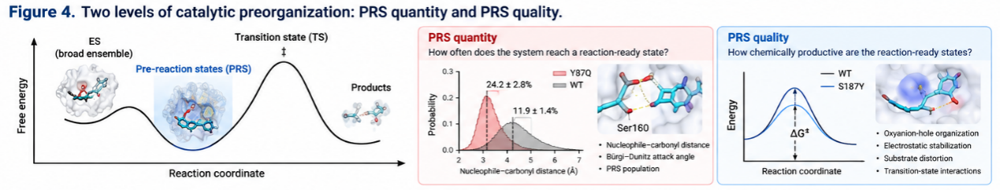

Methods
Experimental Ground Truth and Mechanistic Diagnosis
Both candidates selected by each route were assessed with identical experiment protocol. Upon expression and purification of the enzymes, they were evaluated in a controlled PET-film hydrolysis assay. The amounts of soluble MHET and TPA were subsequently quantified with UPLC. This way, we were able to ascertain if selected sequences provided improvement in hydrolysis. Moreover, we could quantify phenotypes of each variant irrespective of their computational score. This way, we had activity differences validated with an experiment. Next, we asked our models to justify this performance.
We then examined the validated variants with MD, PRS analysis, quantum chemistry, and DIAS. Having used design methods to select candidates and experiments to establish performance, we used these models to ask why a mutation worked. Both discovery routes led to this investigation of the catalytic limitation affected by a useful substitution.
![Two discovery routes, one mechanistic question. Structure-aware graph learning and experiment-informed sequence modeling identified Y87Q. Active-site design and docking identified S187Y through a separate route. Expression, purification, PET-film assays, and UPLC measurements of MHET and TPA established experimental performance. We then examined the validated variants with molecular dynamics (MD), pre-reaction-state (PRS) analysis, quantum chemistry, and distortion/interaction activation-strain (DIAS) analysis. These methods helped identify the catalytic limitation addressed by each mutation.](assets/project-doc/image3.png)
Why Experimental Validation Still Matters
With improvements in the accuracy of computational enzyme design, experiments become more focused rather than dispensable. Protein expression and purification establish whether the attractive computational candidate sequence will be produced into an actual enzyme. The PET-film assay checks whether the molecular hypothesis remains true within the framework of a heterogeneous substrate, whereas the quantification of MHET and TPA by UPLC assures that the phenotype is indeed the result of PET hydrolysis, rather than the indirect outcome of some kind of experimental process. Finally, cross-scaffold testing of the effect of the mutation (in the case of S187Y) verifies whether the beneficial effect will be transferable to other protein scaffolds.
The reason is that experimental activity remains the only source of ground truth in our protocol. Computational modeling provides candidates for experimentation, whereas mechanistic simulation explains the selected mechanisms. Neither one takes place of the experimental proof of enzyme behavior on PET substrates. This division is particularly important in the case of heterogeneous, interfacial reaction, where the microscopic catalytic properties and macroscopic substrate access are closely interlinked.
Experimental Activity as Ground Truth, Not Just a Final Score
Another crucial characteristic of the current workflow is that computational predictions of mutations are validated through experimental testing. Mutations identified computationally as potentially successful are deemed to have reached their goal when they are verified experimentally as active. Protein expression and purification provide the first evidence that a designed variant can be expressed and isolated in the form of an active enzyme, whereas PET-film degradation is a proof of functionality in the context of the heterogeneous polymer substrate. UPLC measurements of MHET and TPA provide further evidence that the observed activity corresponds to the breakdown of PET.
Experimental activity, however, plays an important role not only as the ultimate ranking criterion for the mutations but also because it is the result that needs to be explained by simulations. S187Y is a very illustrative case here. Although there were variants with high docking scores, which had not necessarily showed activity, whereas S187Y was highly efficient at PET hydrolysis. We did not take this discrepancy as the weakness of computations but used it to define the boundaries of binding-oriented approach.
The experimental function makes the process necessarily iterative. Computer models formulate the hypotheses that are then tested by experiments, the mechanistic analysis explains what makes certain versions work and others fail, and that informs the design for the next iteration.

In molecular dynamics simulations, an ensemble of enzyme-substrate complexes is produced, but not all conformations of the ensemble meet the geometric criteria for the nucleophilic attack.